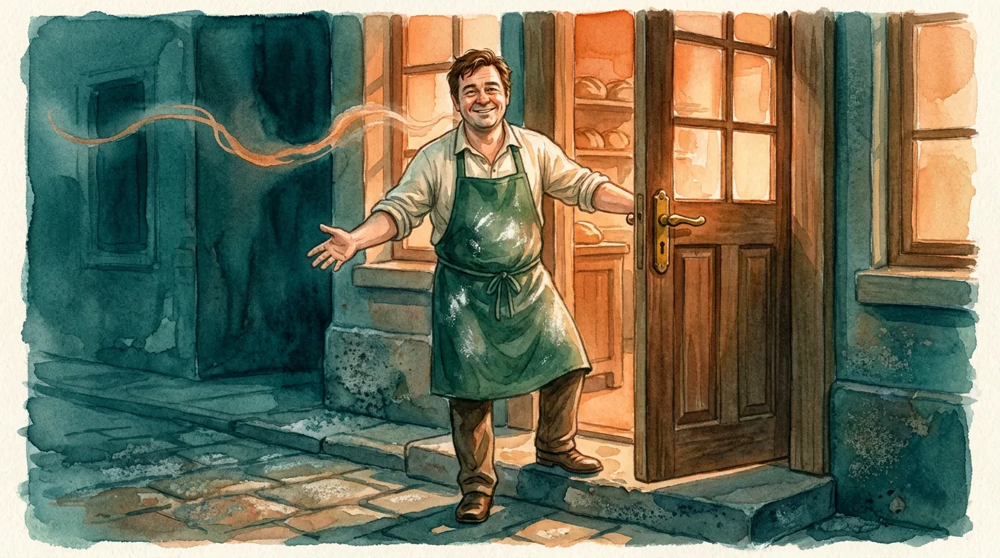
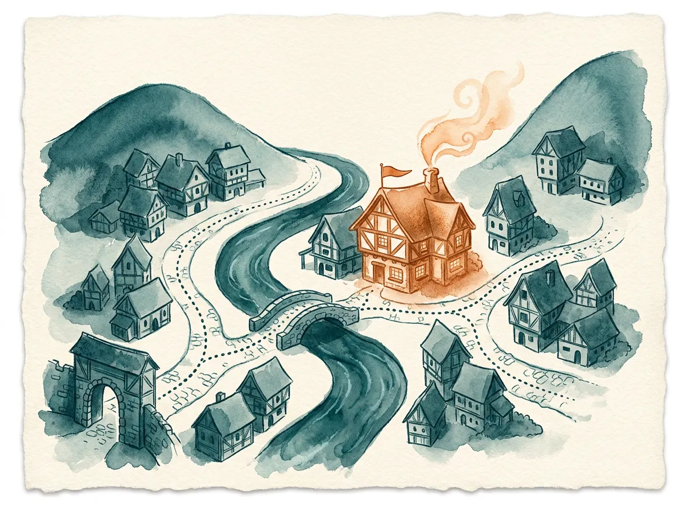

THE DOOR IS OPEN
“I’ll keep a doughnut for you.” — Tomas
We bake at night.
We open with the sun.
We close when the lanterns come on.
FOR THE PRACTICAL-MINDED
Mon–Sun · 7:00 – 19:00

3 Hearthstone Lane, the Old Town
hello@hearthandfable.example
+00 000 000 000